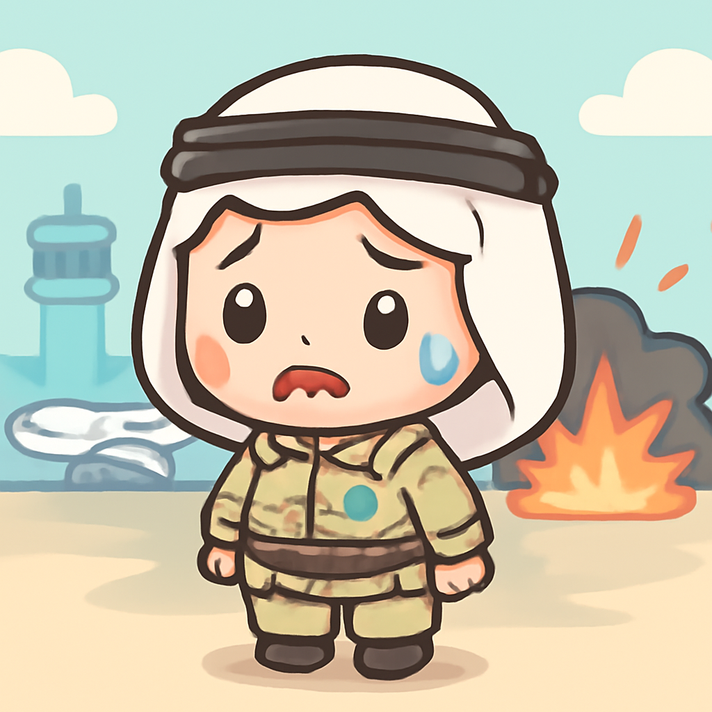
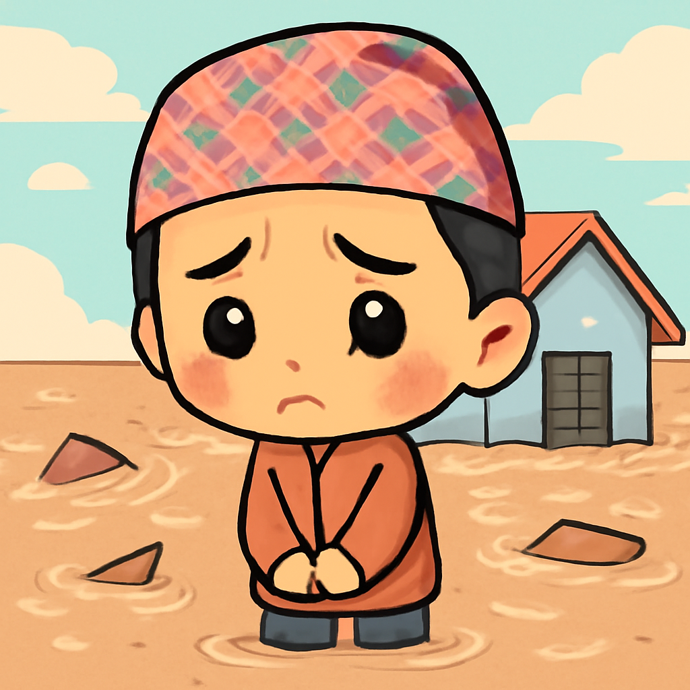

其一 · 沙烏地阿拉伯利雅德 · 胡希攻擊機場造成傷亡
沙烏地阿拉伯首都利雅德發生攻擊，造成一死十一傷。

最近在沙烏地阿拉伯利雅德，胡希武裝組織對機場發動了第二次攻擊，造成一人死亡，十一人受傷。這起事件是該地區緊張局勢的最新表現，讓人不禁想問：沙烏地阿拉伯的防空系統是不是該升級一下了？
🔗 原始新聞 ↗
2026-10-12 · 以古觀今，以笑抗愁
沙烏地阿拉伯首都利雅德發生攻擊，造成一死十一傷。

最近在沙烏地阿拉伯利雅德，胡希武裝組織對機場發動了第二次攻擊，造成一人死亡，十一人受傷。這起事件是該地區緊張局勢的最新表現，讓人不禁想問：沙烏地阿拉伯的防空系統是不是該升級一下了？
🔗 原始新聞 ↗
尼泊爾近期遭受連續洪災，損失慘重。

尼泊爾最近再度遭遇洪水，這次洪水摧毀了許多房屋和橋樑，讓人心痛不已。這個國家剛從上次的災難中恢復，現在又要面對新的挑戰，真是命運多舛。希望這些災後重建的努力能夠早日見到成效！
🔗 原始新聞 ↗
烏克蘭對俄羅斯科技公司Yandex進行攻擊，迫使其暫停營運。
在基輔，烏克蘭再次對俄羅斯的科技巨頭Yandex展開攻擊，這是本週的第三次行動，逼使該公司暫停運作。這不僅是科技戰的延續，也是烏克蘭在面對持續衝突中的回擊，讓人看到了希望的曙光。
🔗 原始新聞 ↗
波蘭警方逮捕一名涉嫌刺殺總理的嫌犯。
波蘭警方最近逮捕一名涉嫌計畫刺殺總理圖斯克的男子，這起事件引發了社會的廣泛關注與討論。政治動蕩的時期，這樣的事件更是讓人不安，大家都希望能夠平靜度過這段日子。
🔗 原始新聞 ↗
吉布地附近一艘船翻覆，造成多名遇難者。
在吉布地附近，一艘載有305人的船翻覆，造成139人遇難，這起悲劇再次揭示了人道問題的嚴重性。每一條生命都值得我們去關心，願所有遇難者的靈魂安息，也希望未來能有更好的安全措施來保護他們。
🔗 原始新聞 ↗